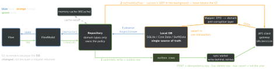

design · folio
In one line: A Repository is only the front door. Behind it: DTOs mapped to domain models at an anti-corruption edge, a local DB as the single source of truth the UI observes, a network gateway that only refreshes it, a unit of work committing changes together, a cache policy per data type, and cursors for paging. Offline-first: reads never wait for the network; writes go through an outbox.
Download PDF Print view LaTeX source


How it works
- Repository vs DAO: a DAO/data source is CRUD over one store; a Repository is a collection-like API over domain objects hiding several sources and the policy between them.
- DTO ↔ domain: the DTO mirrors the wire (optionals, server names); the domain model is valid by construction. Map once, at the edge: that mapper is the Anti-Corruption Layer (Evans) — a foreign model (backend JSON, a vendor SDK) never leaks inward, so an API rename stops at one file.
- Data Mapper vs Active Record (Fowler): AR = the object carries its own persistence (
row.save(); GRDB’stry player.insert(db)is AR-style); DM = a separate mapper moves data, the domain type knows nothing of storage (plainstruct↔NSManagedObject). - Unit of Work = track every change of a business transaction, commit together.
NSManagedObjectContextis one (insertedObjects,updatedObjects,deletedObjects,hasChanges,save(),rollback()) and an Identity Map (uniquing: one object per record per context). SwiftData’sModelContext:insert,delete,save(); autosave only on the container’s main context — a context you create yourself mustsave(). - Specification (Evans/Fowler) = a composable predicate object (
isSatisfied(by:), and/or/not); Query Object = a query as data. Apple:NSPredicate,#Predicate(translated to SQL),NSFetchRequest,FetchDescriptor(fetchLimit,fetchOffset). - Gateway (Fowler) = one object wrapping one external system in your terms (API client,
PaymentGatewayover an SDK). A Repository uses gateways.
Example — the edges, in code
struct ArticleDTO: Decodable { let id: String // wire shape
let title: String?; let publishedAt: Date } // .iso8601
struct Article: Identifiable, Hashable { // domain shape
let id: String; let title: String; let published: Date }
extension Article { init?(_ d: ArticleDTO) { // the ACL edge
guard let t = d.title, !t.isEmpty else { return nil }
self.init(id: d.id, title: t, published: d.publishedAt) } }
struct Cursor: Hashable, Sendable { let token: String } // opaque
protocol ArticleRepository: Sendable {
func articles() -> AsyncStream<[Article]> // observe the SSOT
func refresh(after: Cursor?) async throws -> Cursor? // nil: end
func like(_ id: Article.ID) async throws } // DB now, API laterRemember
DTO at the edge · domain inside · DB is the truth · network only refreshes · writes go through the outbox · page by cursor.
Cache strategies on a phone
| Strategy | Mechanism | iOS use · risk |
|---|---|---|
| Cache-aside | get; miss → load → put | NSCache before an image/API call ·
stale until TTL; miss stampede → share one in-flight Task per key |
| Read-through | the cache loads a miss itself | ≈ URLCache in
URLSession (Cache-Control) · cache must know the source |
| Write-through | write store and cache, then return | settings edits · slower writes, always consistent |
| Write-behind | write locally, flush later in batches | the outbox + sync worker · lost if not persisted; conflicts |
| Stale-while- revalidate | show cached now, refresh in background | every SSOT screen (RFC 5861, HTTP) · show “updating” |
Single source of truth + paging
- SSOT: the UI observes the DB, the network writes into it, the view model never keeps its own copy — offline and online share one code path.
- Offset (
?page=3,fetchOffset): an insert shifts every page → duplicates/skips; cost grows with the offset. - Cursor/keyset (
?after=<opaque>): stable under inserts; the repository storesnextbeside the rows,nil= end; the VM only callsloadMore().
Traps
- DTOs or
NSManagedObjects in the UI: API shape + persistence leak everywhere. NSManagedObjectis bound to its context’s queue — passNSManagedObjectID, or map to structs.- Optimistic update without a persisted outbox: kill the app, lose the write.
- Two sources of truth (VM array + DB) drift — observe, don’t copy.
- Offset paging on a live feed = duplicate rows.